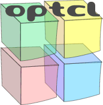
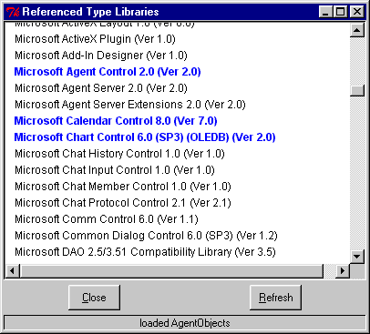
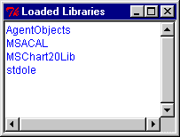
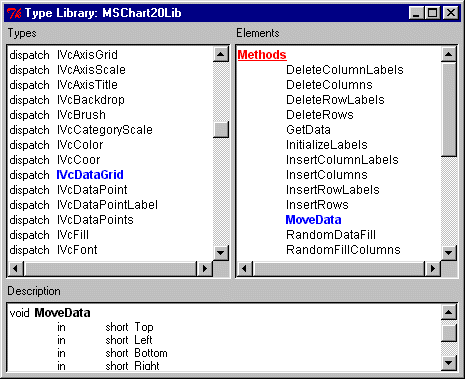

OpTcl provides two means of accessing the type information stored in a Type Library - graphical or command-line based, with the graphical version being built on top of the command-line commands.
The command line access to type libraries is implemented with the typelib namespace. Here's its synopsis:
The typelib::alllibs command returns a list of registered libraries by their human readable names.
The typelib::updatelibs command update OpTcl's internal list of registered libraries from the system registry.
The typelib::libdetail command returns a list of three elements - the unique identifier for the library, its major version number, and its minor version number.
The typelib::load takes as its only parameter, the human readable name of a registered Type Library. If successful in loading the library, the command returns the programmatic name for the library. Otherwise, the function returns an error.
The typelib::unload command takes as its only parameter, the human readable library name of a registered Type Library. If the library has been loaded, it is subsequently unloaded.
The typelib::isloaded command returns true if and only if its only argument is the user readable name of a library that is currently loaded.
The typelib::loaded command returns a list of the currently loaded libraries, in terms of their programmatic names.
The typelib::types command takes as its only required parameter, a programmatic name for a loaded library. It returns as its result a list of types defined in the library. Each element of this list is composed of two elements: a type category followed by the name of the type. Types fall into one of the following categories.
| Category | Description |
| enum | An enumeration type. |
| struct | A record/structure type. |
| union | A union type. Currently OpTcl can't manipulate these. |
| typedef | An alias to another type. |
| module | Globally declared functions (currently, OpTcl cannot call these). |
| interface | A collection of functions that implement the objects methods, and its properties (get and set functions). OpTcl cannot call these directly. |
| dispatch | The same as interface, except that OpTcl can call these directly. Usually a dispatch interface wraps an inherited interface type. |
| class | A collection of interfaces (or dispatches), broken into two categories: incoming and outgoing. Incoming interfaces are those that are used to invoke methods or access properties of an object, whilst outgoing interfaces generate events from an object. In each category, a class type can specify a default interface. Each OpTcl object is associated with a maximum of one class type. |
The typelib::typeinfo command returns information for either a type (in the form lib.type) or, if provided as the last parameter, an element of a type. These two forms are described as follows.
The first form returns a list with four items. The first item is the type's category. The second is a list of methods supported by the type; the third is a list of properties for the type. The last item is a list of fully formed names of inherited types.
Information of an element is stored in a list of three elements: the category of the element (either method or property), its signature, and documentation string (null, if not provided by the library).
The format for an element's signature is based upon the elements category. method elements return a signature that is a list, with the first item being the return type of the method, the second being the name of the method, and the remaining elements being its parameters.
For a property element, the signature is a list with the first element being the access flags to the property (a combination of read or write), followed by the properties type and its name. The remaining list elements are the parameters required to access an indexed property.
A parameter description in OpTcl is a list with three required members and one optional.
The first list element is a collection of flags describing the direction of information flow for the parameter. This can either be in, out, or both together. A parameter flagged as in indicates that information flows from the caller to the callee (by value call). A parameter flagged with out indicates that information flows from the callee to the caller. In the case of both flags being present, the information flow is bi-directional (call by reference). It is important to note the significance of this when operating with COM objects from OpTcl. A parameter that is out or inout requires the name of a Tcl variable to hold the value of the parameter. In the case of inout the variable must exist prior to the method call. Currently, OpTcl doesn't make full use of type information for event handling. All parameters of an event are passed to Tcl by-value only, for the time being.
The second list element is the correctly formed type-name of the parameter. The third list element is the parameters name. The final optional list element is either a question mark, '?', indicating that the parameter is optional, or some other value, denoting a default value. OpTcl currently does not fill-in missing parameters with their default values.
For this OpTcl defines the tlview namespace. Here is a synopsis of the commands defined within it:
The tlview::refview command creates a toplevel window that displays a list of system-registered typelibraries. Here's a screen-shot:

In blue are the libraries currently loaded by OpTcl; the others aren't loaded. The Refresh button updates the list. Clicking on a library, either loads or unloads it, depending on its currently status. At the bottom of the screen, a status bar informs of result of the most recent operation.
Once a library is loaded, it is referenced within OpTcl using a programmatic identifier; in fact, this is true for any client of COM's type-libraries - e.g. Visual Basic. The tlview::loadedlibs command creates a toplevel window, hosting a list of currently loaded libraries, in terms of their programmatic id. Heres's a screen-shot:

The list is automatically updated, every time the window receives mouse focus. Here's where the fun begins. Each element is mouse-sensitive - clicking on one creates a browser window for that library. At any time, a type browser can be opened using tlview::viewlib command. The system ensures that there is only one browser per library. Here's a grab of browser in action:

The left-hand pane contains a list of types within the library. Clicking on any type displays its elements in the right-hand pane. Elements in a typelibrary are organised in terms of methods, properties and inherited types. The right-hand pane sorts the elements into these basic groups. The lower pane gives a description of the element last clicked. If the type library provides any describing text for that element that is also displayed. In the lower pane, if a non-primitive type is used to describe either a property or an element of a method, then that type will also be click-sensitive. For a more detailed explanation please read the section on accessing elements of a type.
The tlview::viewtype command can call-up a browser window to view the details of a specific type in a Type Library.
Copyright (c) 1999, Farzad Pezeshkpour